こちらはアトリエ高菜先生で暮らしている猫たちの紹介とパトロン募集ページです。
各猫はパトロンを募集しており、パトロンになってくださる方には特典をご用意しております。
ぜひご支援お願い致します。
パトロン制度について
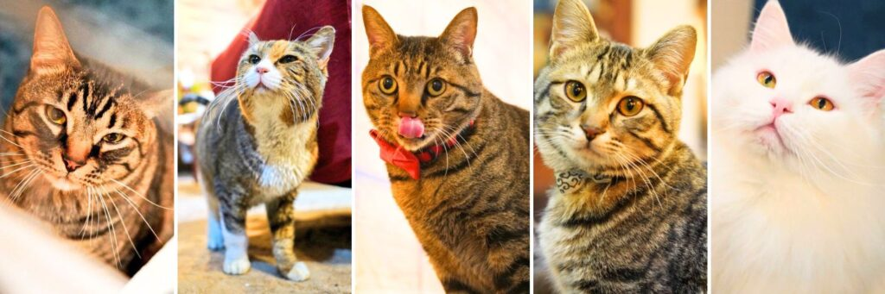
高菜先生猫カフェのパトロン制度は、当店で暮らす保護猫たち1匹1匹に“専属応援団”をつける仕組みです。
あなたが選んだ猫は「あなたの家族」として、アトリエ高菜先生で生活していきます。
支援いただいたお金は日々の生活費・医療費・ごはん代などに継続的に使用いたします。
パトロン様の愛情が、猫たちの安心・安全な暮らしにつながります。
この取り組みの意義
月500円から、1匹の命を支える“パトロン”に。
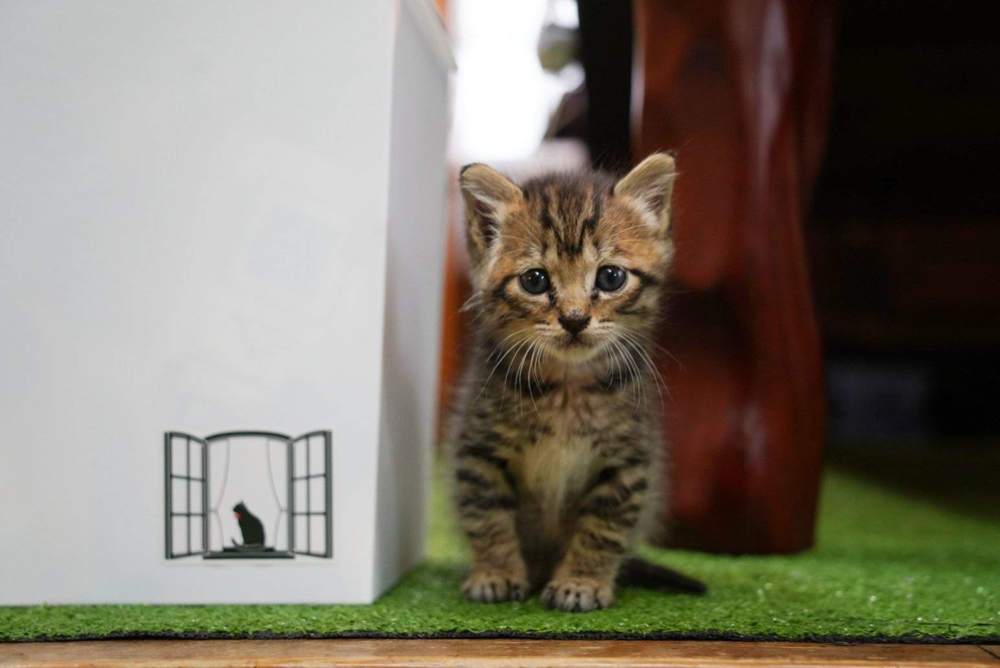
保護猫の活動は、尊いけれどつづけるのがとても難しい。
医療費、食費、場所代…1匹あたり月にかかる金額は約5,000円〜10,000円。
でもほとんどの保護活動家は資金が足りず、赤字を抱えながら働いていたり、中には破産して自殺する方も少なからずいます。
また、クラファンを連発しながら活動をつなぎ、破綻寸前になる人もいます。
なので私達は「仕組みで変えよう。」と考えています。
保護猫1匹につき、パトロンが５人１０人とつけば…。
猫の命はつながり、人の想いも支援も循環していきます。
パトロン制度について
あなたの“推し猫”を見つけて、毎月少しずつ支援する仕組みです。
| プラン | 月額 | リターン内容 |
|---|---|---|
| おやつパトロン | 500円 | 猫の写真＆お礼メッセージ |
| ごはんパトロン | 1,000円 | 上記＋店内に名前掲載 |
| ずっとパトロン | 2,000円 | 上記＋店内に名前掲載＋限定すりだね贈呈 |
-
すべて月額自動継続・いつでも解約OK
-
お金の使い道はすべて対象の猫に
-
あなたの支援は、猫たちの生活そのものを支えます
限定すりだねとは？
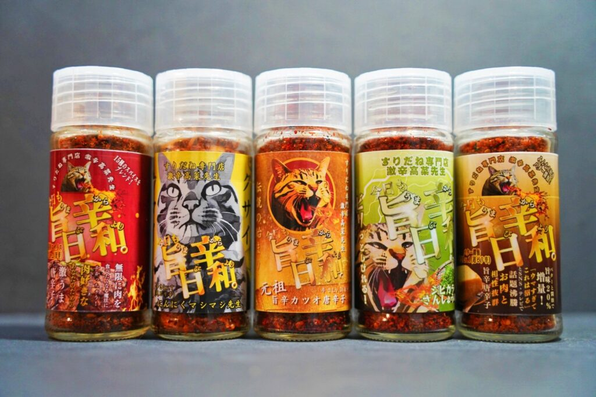
保護猫支援・障害者支援につながるオリジナル旨辛唐辛子です。
非売品のパトロン様限定のすりだねを発送いたします。
毎月味が変わります。
※決済方法：クレジットカード／銀行振込／PayPay対応
※ご支援は1ヶ月単位でいつでも開始・終了可能です


保護猫のために使用させていただきます。
猫の紹介
高菜先生
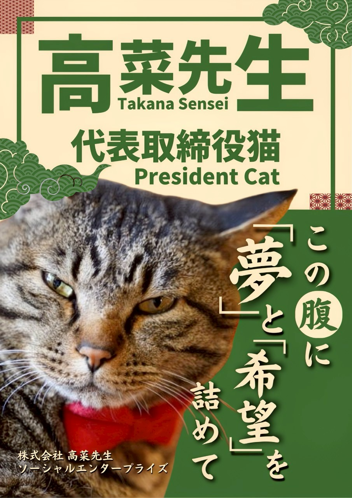
2019年8月2日宮崎県出身。2019年10月より山梨県に移住し超超エリート株式会社に入社。2代目看板猫をつとめる。現在では旨辛唐辛子ブランド【激辛高菜先生】や猫専門のラインスタンプ作成サービス【すにゃんぷ高菜先生】やコミュニティスペース【アトリエ高菜先生】の顔として活動している。
デイビッド・ウニ
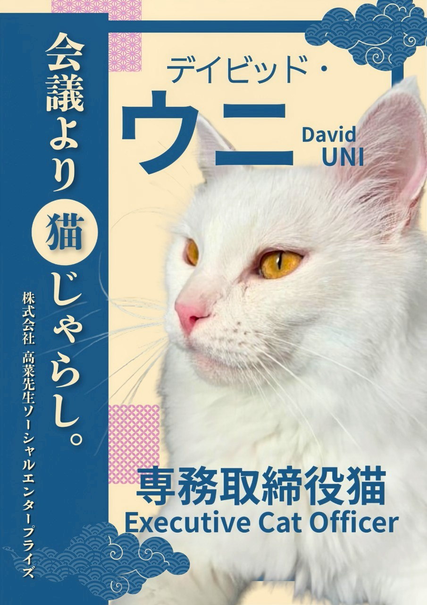
2021年生まれの3歳。ししゃも・ノートルダムの弟。山梨県都留市出身。永遠と遊んでられる体力の持ち主で、常にオモチャで遊んでおきたい行動派猫。遊んでくれるなら誰でもOKで人見知りなど一切しない白猫。非常にすばしっこい。
ししゃも・ノートルダム
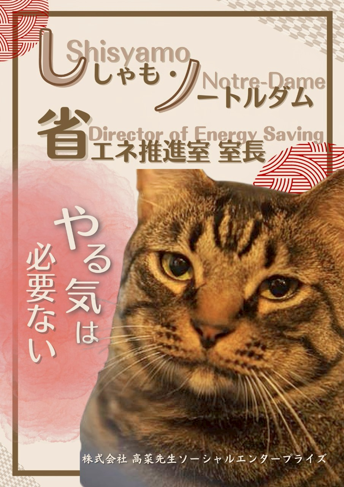
2021年生まれの3歳。デイビッド・うにの兄。山梨県都留市出身。基本的にやる気がなくほとんど何もしないけど、お腹が空いてるときだけはアピールがすごい。人見知りはしないけど積極的に近寄ってくるわけでもない。難病もちで何度か手術をしている。
ミルク山岡
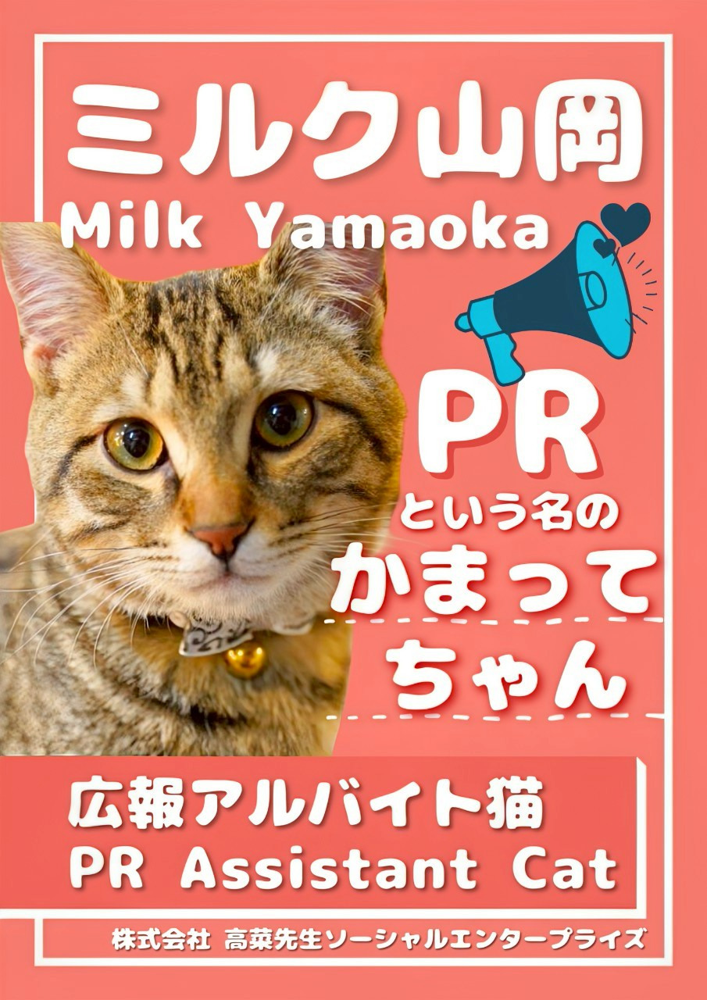
2024年生まれの子猫。山梨県笛吹市のとある企業の敷地内で保護され、誰も引き取ることができず保健所に行くことに。アトリエ高菜先生の代表桑原淳がたまたまSNSでそれを見かけて引き取ることに。非常にヤンチャで元気。子猫ゆえに大人気。
小野おピッピ
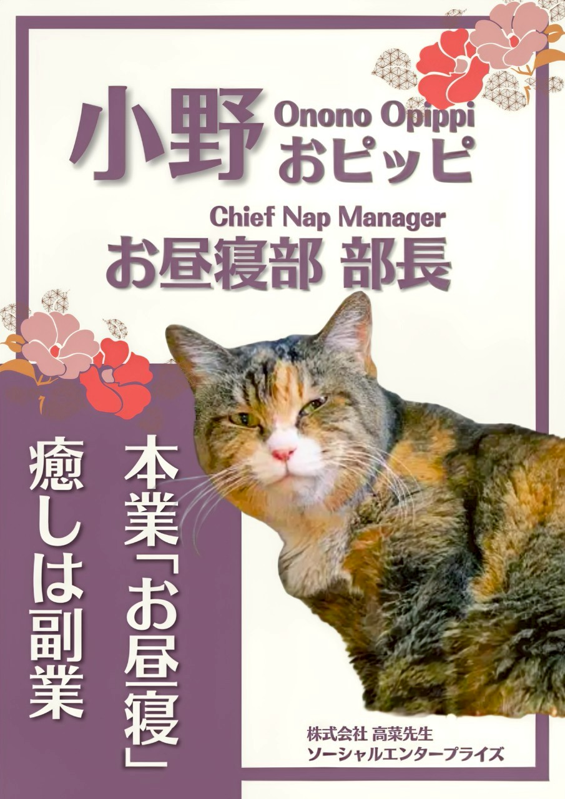
山梨県笛吹市出身。年齢不詳で推定10歳から15歳のおばあちゃん。大けがしているところを保護され、療養ののちにアトリエへ。基本的に寝ているが気分で膝に乗って甘えてくる。
綾小路嬢ミノ
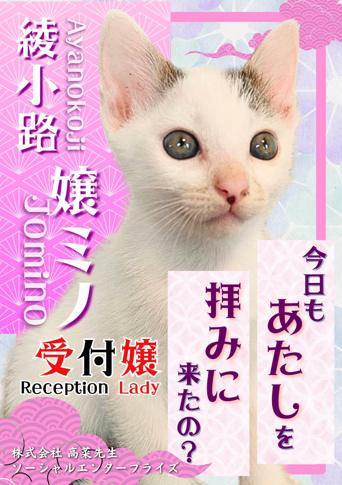
2025年7月生まれ。エドモンド本田翼の姉。富士河口湖町出身。基本的にのんびりおっとりな、おしとやかなタイプの女の子。スタッフが飲み会をしている時にノリで名前をつけられてしまった。
エドモンド本田翼
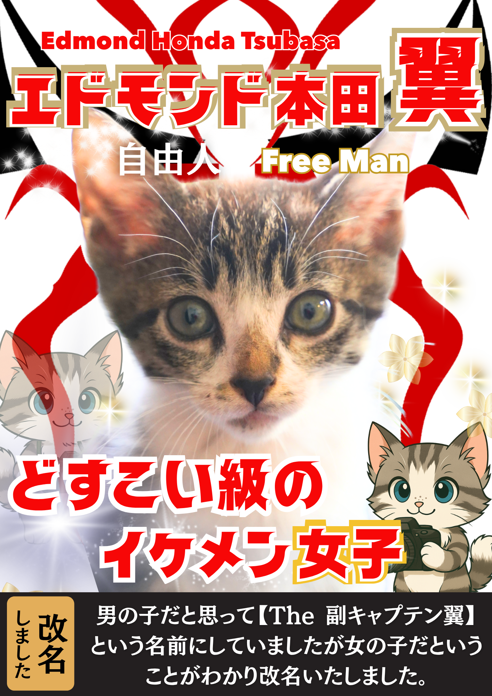
2025年9月生まれ。綾小路嬢ミノの妹。富士河口湖町出身。とにかく動いてないと気がすまないタイプ。当初オスだと勘違いして副キャプテン翼の名を授かるも、のちに女の子だとわかり改名。
企業様向け協賛プランと内容一覧
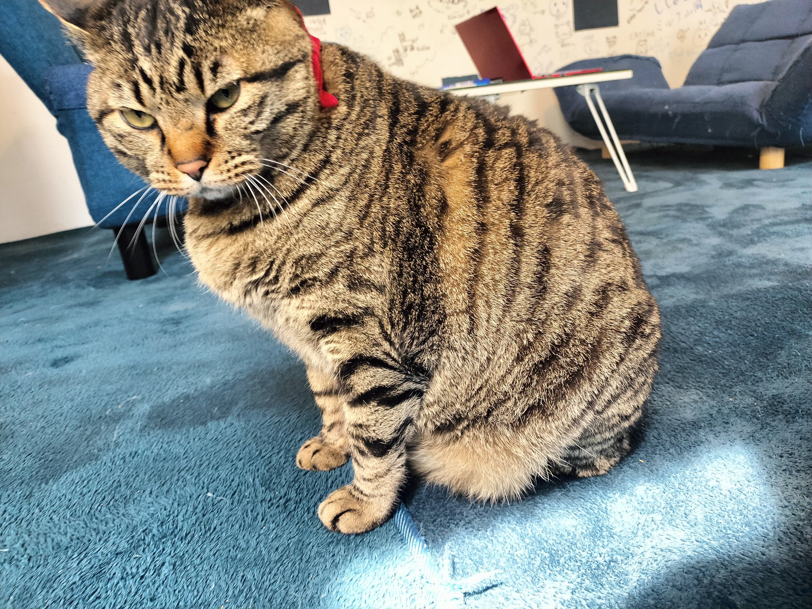
アトリエ高菜先生では企業様の協賛・寄付も募っております。
宣伝広告を行いますので、ぜひご検討ください。
| プラン名 | 金額（税込） | 内容 |
|---|---|---|
| こども食堂イベントスポンサー | 5,000円 | 食堂1回分の食材・調理費支援。SNSで感謝投稿、宣伝、当日チラシ配布を行います。 |
| 保護猫スポンサー | 10,000円 | 上記＋HP・アトリエ高菜先生内の掲示板にロゴ掲載、貴社HPへのリンク掲載。 |
| 高菜先生スポンサー | 30,000円 | 上記＋デザイン、SNS・店頭連携PR、猫デザインラベル提供（内容は相談の上決定） |
よくあるご質問
Q1. パトロンになると、どんなことができますか？
A. 選んだ猫の毎月の生活費の一部をご支援いただけます。お礼メッセージや写真、特典などプランに応じた“ふれあい”も楽しめます。
Q2. 猫に会いに行けますか？
A. はい、営業時間内であれば「アトリエ高菜先生」にて面会可能です。
Q3. 猫は選べますか？また、途中で変更できますか？
A. 猫はプロフィールから自由にお選びいただけます。また、途中で支援する猫を変更することも可能です。（マイページ or お問い合わせにて対応）
Q4. 月々いくらから支援できますか？
A. 500円から可能です。無理のない金額で「続けられる支援」が理想です。上位プランでは特典も増えます。
Q5. 支払い方法は？
A. 各種お支払い方法に対応しております。
Q6. いつでも解約できますか？
A. はい、マイページまたはご連絡いただければいつでも即時解約可能です。
Q7. 使い道はどうやって確認できますか？
A. SNSで、猫たちの生活・医療・運営の透明性をしっかりお伝えしています。
Q8. 複数の猫を支援することもできますか？
A. もちろん可能です。「この子も支えたい！」という方のご支援はとても心強いです。
Q9. 法人として支援したいのですが可能ですか？
A. はい、法人様のご支援も歓迎しております。広報連携やコラボなど特別な連携プランもご提案可能ですので、お気軽にご相談ください。
Q10. 一度見学に行ってみたいです。
A. 見学・訪問は随時可能です。事前のご連絡をおすすめしています。
代表挨拶
高菜先生革命プロジェクトのページをご覧いただきありがとうございます。
株式会社高菜先生ソーシャルエンタープライズ代表取締役の桑原淳と申します。
このプロジェクトを行っている理由は2つあります。
弊社は企業として社会貢献を重視しており、猫の保護活動やがん患者様向けに医療用ウィッグを作成するサービスなどを行っております。
また飲食店を経営する中で【地域に対する貢献】【食を通した社会貢献】が何かできないかとも考えていました。
近年全国的に子ども食堂が開催されておりますが、貧困世帯や貧しい子供に限定することの不公平さ、またそうすることで本当に困っている子供や家庭が「恥ずかしくて行きたくない」などの問題が起こると考えていました。
そこで参加者を子供や貧困などの条件でわけることをせず、開催も限定的ではなく毎日行うことにし、定期的に参加型のイベントを開催することにしました。
地域の人々がイベントを通じて気軽に交流できるような形を作ることを優先し、居場所作りを行っています。
もう1つの理由としては弊社の理念である【イイコトして高菜先生を世界一有名に】を実現するため、プロジェクトを通して高菜先生を知っていただきたいという思いからです。
是非この機会に弊社の取り組みを知っていただくことや、また河口湖店のみとなりますが、猫たちと触れ合っていただくいい機会になればと思っております。
超超エリート株式会社
高菜先生ソーシャルエンタープライズ
代表取締役 社長
桑原淳